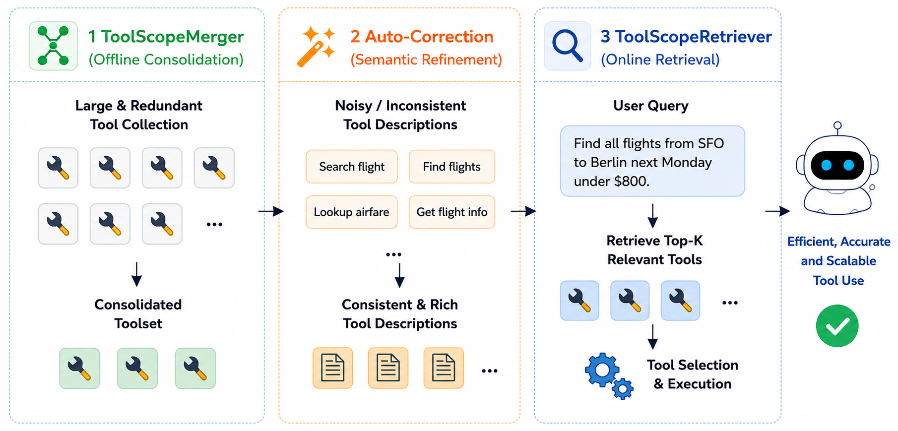
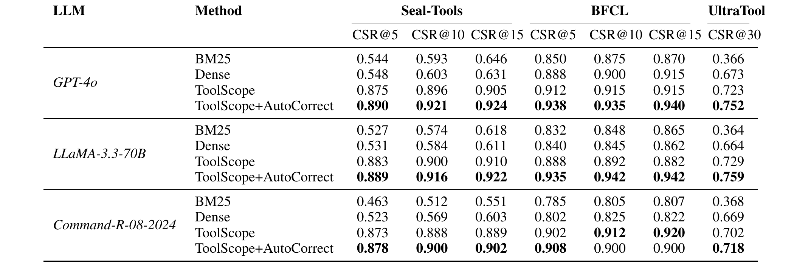

🎉 Accepted by ACL 2026 Main 🎉
Large language model (LLM) agents rely on external tools to solve complex tasks, but real-world toolsets often contain redundant tools with overlapping names and descriptions, introducing ambiguity and reducing selection accuracy. LLMs also face strict input context limits, preventing efficient consideration of large toolsets.
ToolScope addresses these challenges with two modules: ToolScopeMerger (with Auto-Correction) to audit and fix tool merges and reduce redundancy, and ToolScopeRetriever to rank and select only the most relevant tools per query, compressing toolsets to fit context limits without sacrificing accuracy.
LLM agents are increasingly deployed with large external toolsets, but practical tool selection is limited by two persistent issues: semantic overlap among tools and strict context-window budgets. Overlap causes ambiguity in both retrieval and final tool choice, while long tool lists force models to reason over noisy context.
ToolScope targets both bottlenecks jointly. It first consolidates overlapping tools with automated merge validation, then applies context-aware retrieval to pass only the most relevant tools to the agent. This combination improves selection quality while keeping the prompt compact enough for real-world inference constraints.

Figure 1. Overview of ToolScope Architecture Diagram
Following Section 3 of the paper, ToolScope contains two core modules: ToolScopeMerger and ToolScopeRetriever. The merger resolves semantic overlap in large toolsets, and the retriever selects compact, query-relevant top-k tools for downstream agent selection.
ToolScope is designed around two bottlenecks in LLM agent tool use: overlapping tools and input context limits. The workflow first merges redundant tools into a cleaner toolset, then performs hybrid retrieval and reranking so only the most relevant tools are passed into the model context.
ToolScopeMerger is organized into three stages: S1 Candidate Generation (tool indexing), S2 Relationship Classification & Graph Formation, and S3 Consolidation & Auto-Correction.
Given toolset T = {t1, t2, ..., tn}, each tool description is embedded, nearest candidates are retrieved by cosine
similarity, and an LLM-based binary classifier decides whether a tool pair is semantically equivalent.
Edges between equivalent tools define an undirected graph; connected components form merge clusters.
A representative tool is selected per cluster to form the pruned toolset T'. Auto-Correction then validates each
proposed cluster, splitting or removing tools when semantic equivalence fails, ensuring a reliable one-to-one mapping
from original tools to merged tools for dataset relabeling.
For single-tool queries, ToolScopeRetriever computes a weighted hybrid score combining dense and sparse retrieval, then reranks top candidates with a cross-encoder:
For multi-tool queries, each subquery is retrieved and reranked independently. Top-1 tools from each subquery are kept, and remaining candidates are globally ranked by normalized reranker scores:
The final top-k set is constructed by including all subquery top-1 tools first, then adding highest normalized candidates until k tools are selected.
ToolScope achieves the best CSR@k across all three evaluated LLMs (GPT-4o, LLaMA-3.3-70B, and Command-R-08-2024) on Seal-Tools, BFCL, and UltraTool. Following the paper, the largest gains are observed on the more challenging tool-heavy settings: +34.6% on Seal-Tools and +38.6% on UltraTool, with stable improvement on BFCL (+8.8%).
Improvements are robust across different k values, and ToolScope+AutoCorrect consistently outperforms BM25 and dense-only retrieval. This pattern matches the paper's analysis that automatic merge correction is most beneficial when tool overlap and ambiguity are high.

Table 1: Correct Selection Rate (CSR@k) for each method and LLM.
Our paper provides comprehensive experimental analysis beyond the results presented above. For detailed information on the following aspects, we refer readers to the full paper:
Module-level ablations show ToolScopeMerger contributes the largest gains, while ToolScopeRetriever reranking helps most on larger and noisier tool corpora.
Coverage remains high after merging, with 82–95% tool-call coverage (TCCR) and 80–96% capability coverage (UCC), supporting reliable consolidation.
In end-to-end evaluation, improved tool selection transfers to downstream performance, substantially outperforming retrieval-only baselines.
Auto-Correction consistently refines merge quality, yielding additional CSR improvements, with strongest effects on high-overlap datasets.
For complete protocols, extended tables, and full analysis
Read Full PaperIf you find ToolScope useful for your research, please consider citing our paper:
@misc{liu2026toolscopeenhancingllmagent,
title={ToolScope: Enhancing LLM Agent Tool Use through Tool Merging and Context-Aware Filtering},
author={Marianne Menglin Liu and Daniel Garcia and Fjona Parllaku and Vikas Upadhyay and Syed Fahad Allam Shah and Dan Roth},
year={2026},
eprint={2510.20036},
archivePrefix={arXiv},
primaryClass={cs.CL},
url={https://arxiv.org/abs/2510.20036}
}